EARLY YEARS & PRIMARY
Nursery – Class V
Build strong foundations through curiosity, communication, creative activities and guided learning in a caring environment.
Enquire for primary classes →Welcome to V.K. International School, Tilpat, Faridabad — a learning community that brings academics, sports and co-curricular experiences together to help every student grow with confidence.
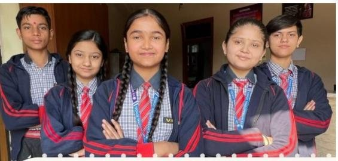
V.K. International School is affiliated with the Central Board of Secondary Education (CBSE). The school aims to blend academic learning with sports and co-curricular activities, helping students build knowledge, self-belief, creativity and a lifelong desire to learn.
From early learning through senior secondary, VKIS encourages young people to develop confidence, curiosity, responsibility and the skills to embrace the world beyond school.
Structured learning pathways support students as they move from foundational skills to independent thinking and senior secondary specialisation.
Build strong foundations through curiosity, communication, creative activities and guided learning in a caring environment.
Enquire for primary classes →
Grow subject understanding, collaboration, digital awareness and independent learning habits through varied experiences.
Explore middle school →
Prepare for board examinations and future pathways with focused academics and senior secondary stream choices.
Explore senior classes →For learners interested in scientific discovery, technology and analytical problem-solving.
Explore business, finance, economics and the world of enterprise.
Build perspective through society, people, culture and ideas.
Co-curricular activities, teamwork and personal development complement academics.
Explore the facilities and student-support features highlighted in VKIS school information.
Technology-supported learning to build digital confidence and practical skills.
Hands-on opportunities to observe, investigate and better understand concepts.
A reading culture that supports curiosity, knowledge and independent learning.
Guidance and support from educators throughout the learning journey.
Space for movement, sports, outdoor play and teamwork.
Student care initiatives, including medical-test activities shown in school material.
CCTV cameras and a focus on maintaining a supportive school environment.
Creative, cultural and co-curricular opportunities that nurture individual strengths.
Real campus moments shared by you. These have been individually cropped and upscaled for a cleaner display; original photo files will look sharper still.
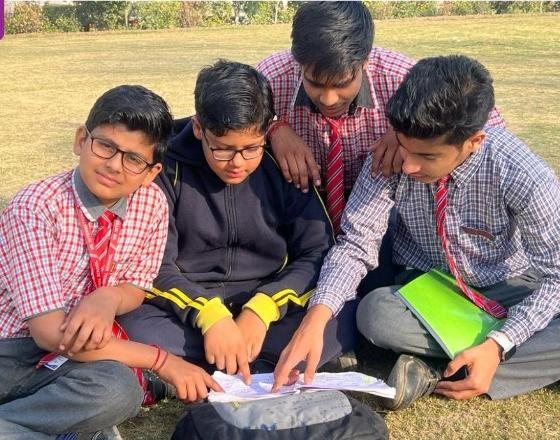
Collaboration and peer learning

A place to learn and grow
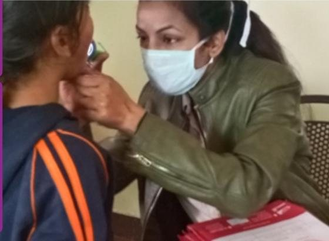
Student well-being and care

Confidence, friendship and belonging
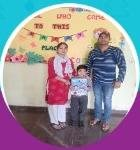
Families are an important part of school life
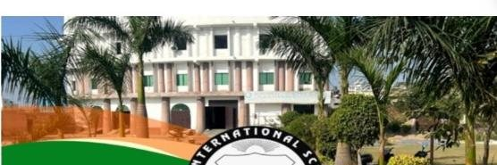
Growing through everyday learning
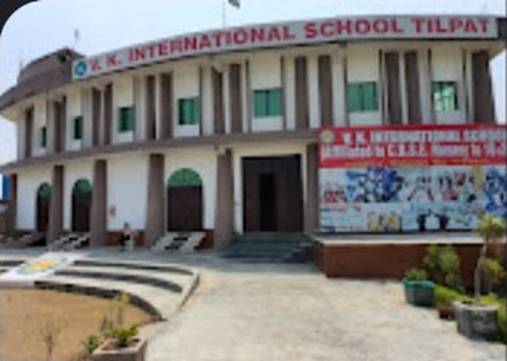
A welcoming place to learn
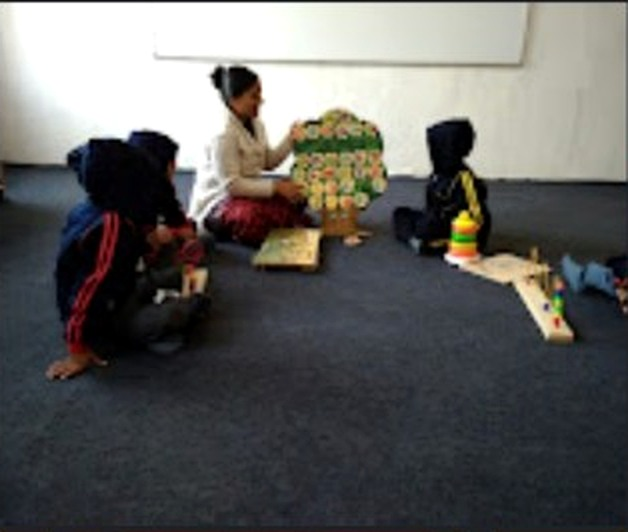
Classroom activities and discovery
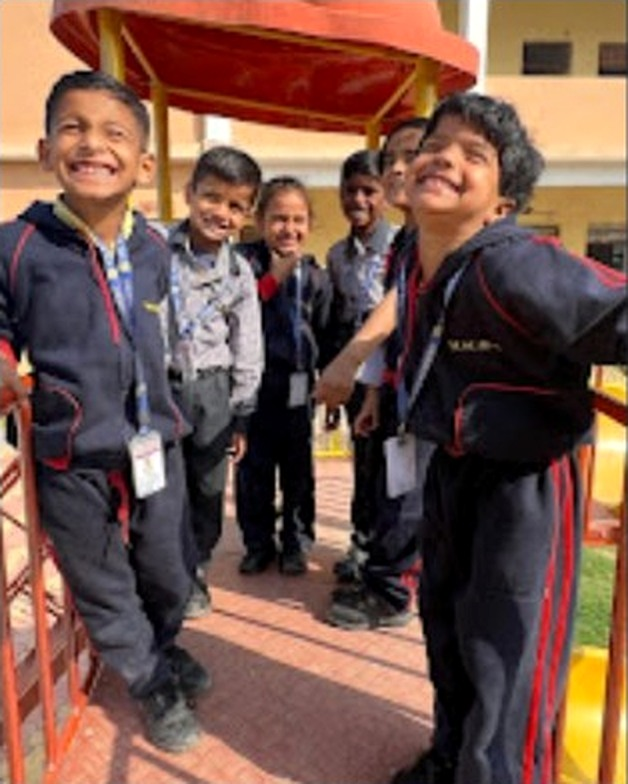
Growing with confidence
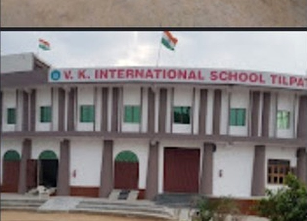
A familiar home for learning
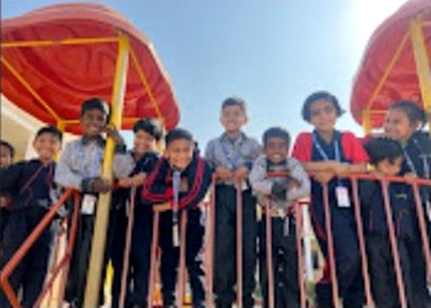
Learning, sharing and belonging
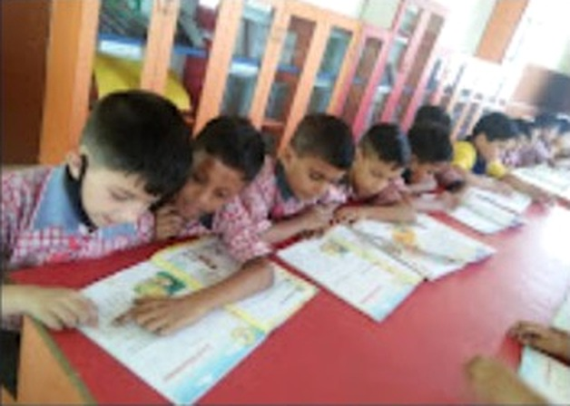
Practice builds confidence
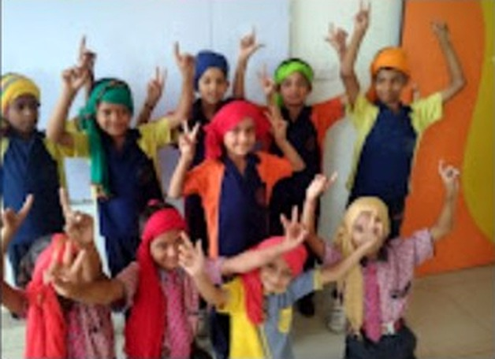
Confidence through participation
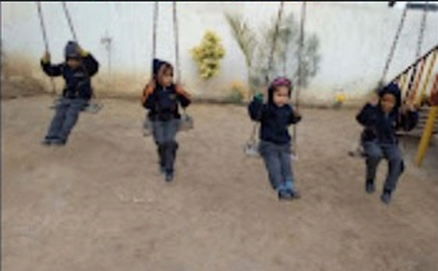
Movement, fun and teamwork
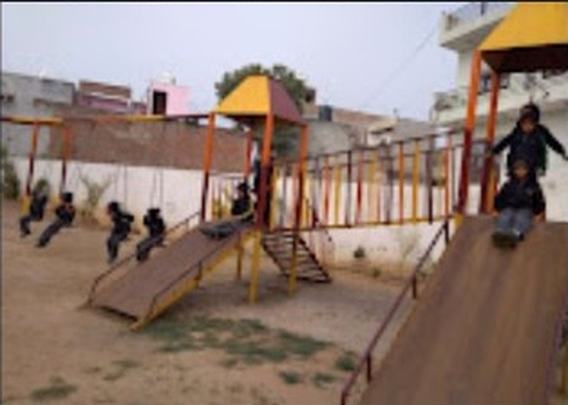
Active minds and healthy habits
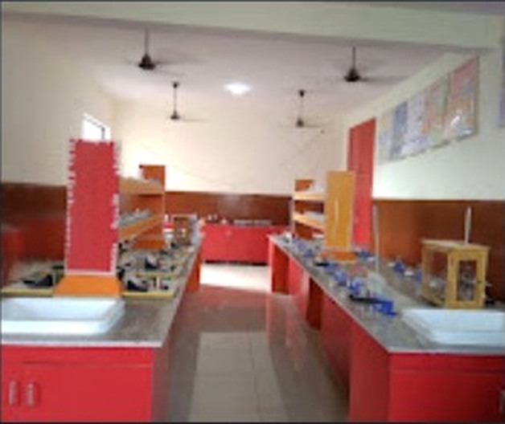
Hands-on exploration
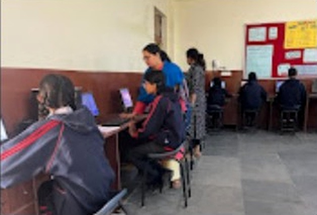
Digital skills for tomorrow
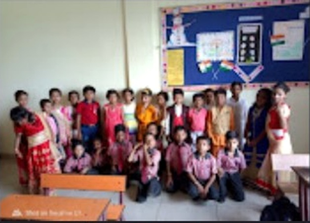
Learning side by side
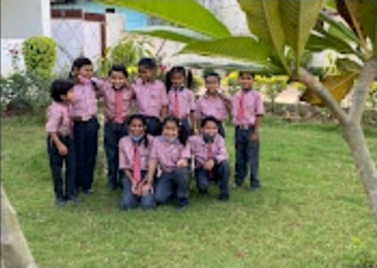
Friendship and outdoor time
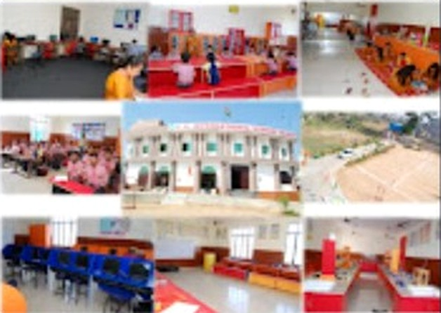
A glimpse of everyday school life
Testimonial text is based on the school screenshot shared; confirm permission before publishing.
Interested in working at V.K. International School? Send your details for the school team to review.
Quick links for families. Official documents should always be checked against the latest school circulars.
Find school affiliation and required disclosure information through the school's official page.
Open disclosure page ↗Ask the school for the latest class-wise homework, syllabus and academic calendar.
Request academic information →Interested in a teaching or school-coordinator role? Contact the school for current vacancies.
Email about vacancies →Admissions are advertised for Nursery to Class IX and Class XI. Contact the school to confirm current seat availability and eligibility.
For admissions, academics, school visits and other questions, contact the school directly.
Complete the form and your email app will prepare an enquiry to the school.